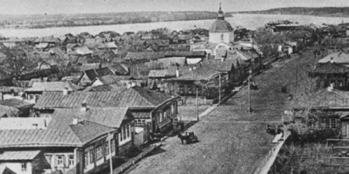

Администрация городского округа
Тольятти
официальный портал
Тольятти
официальный портал
Городской округ Тольятти расположен в уникальном районе России, примерно в 1 000 километров к юго-востоку от столицы страны Москвы. Это второй по величине и значимости город в Самарской области. Его окружают Жигулевские горы и поволжские равнины, озера и великая русская река Волга. Рядом находятся Национальный парк «Самарская Лука» и Жигулевский заповедник. В 17-18 веках в Жигулях шли народные восстания под руководством Степана Разина и Емельяна Пугачева. Высота Жигулевских гор достигает 375 метров, ширина гряды – 5-7 километров. По разнообразию рельефа и горных пород, своеобразию животного и растительного мира Жигули можно сравнить с заповедными местами Крыма и Кавказа. Здесь открываются большие возможности для активного туризма и познавательного отдыха.
История Тольятти свидетельствует о его постоянном развитии, стремлении к решению самых сложных и неординарных задач, совершенствовании системы городского управления. Созданный как первенец самых дерзких проектов своего времени, Тольятти и сегодня остаётся молодым, динамично развивающимся, привлекательным для инвестиций и комфортным для жизни и работы городом.
Свой путь Тольятти начал как город-крепость, основанный государственным деятелем и российским историком Василием Татищевым. 20 июня 1737 года императрица Анна Иоанновна жаловала грамоту крещенной калмыцкой княгине Анне Тайшиной об основании города. Форт-пост решено было назвать Ставрополь, что в переводе с греческого языка означает «Святой крест». В честь этой даты в Тольятти сложилась ежегодная традиция чествовать семьи, в которых дети появились на свет 20 июня — в День исторического рождения города.
В начале XX века в Ставрополе проживало около 6 тысяч человек. Работала одна земская больница, 6 учебных заведений, 2 гостиницы, 6 фабрик и заводов, 1 водяная и 4 ветряных мельницы. К середине столетия в городе насчитывалось 12 тысяч жителей. В 1950 году Ставрополь становится центром величайшей стройки - Волжской ГЭС им. В.И. Ленина и переживает поистине второе рождение. В 1953-1955 годах город практически полностью переносится на 18 км из зоны затопления Куйбышевского водохранилища на левый берег реки Волги. С апреля 1951 г. Ставрополь становится городом областного подчинения. В августе 1964 года он был переименован в Тольятти. Ежегодно в первое воскресенье июня тольяттинцы отмечают День города.